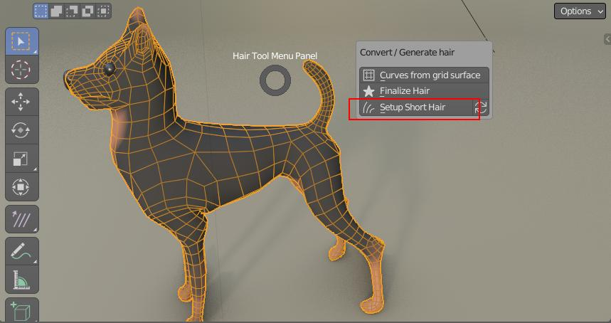

Short Hair Modeling Tool¶
In this modeling technique we are instancing haircards on mesh edges (haircard count will be the same as character mesh edges count). Usefull for creation of fur.
Note Short Hair modeling requires Blender 3.1 or above.
The main advantages:
- easy to setup - one click solution
- easy to tweak with blender sculpting tools (or with poly modeling)
- haircards distribution based on source character mesh topology - you will automatically get denser hair in more important areas: head, hands (but this can be con - depending on situation)
The main cons:
- no easy way to control density - since density is based on source character mesh topology (you cant drive it with eg. vertex group)
- hair source mesh has to have same topology as hair guide mesh. This mean you may have to start combing from scratch if change base mesh topology (but there is workarund I will show later)
Note: You can tweak haircards density by changing base mesh topology - eg. by using remesh modifier or adaptive tesselation in blender sculpt mode.
How To use¶
To setup short hair:
- Select your character. Lets say it is named 'body' 
- Use Ctrl+Shift+H menu -> 'Setup Short Hair'
- Two new objects will be added: 'body_short_hair' (hair object) and 'body_hair_guide' (drawn as bounding box)
- Select hair guide object (boudng box) and go into sculpt mode
- that is it, you can now sculpt hair by sculpting guide mesh (polyg modeling can be used too)
Parameters:¶
Strands Length - Inital Haircards length, helps to visualise haircards when guide mesh is exactly the same as base mesh
Noise - Helps to break the even look of haircards
Noise Mode - Noise haircard twisting (0 - without, 1 - with)
Strand Resolution - Add additional subdivision along strands length
Vert Color - Set it up, if you want Short Hair shader to display vertex color